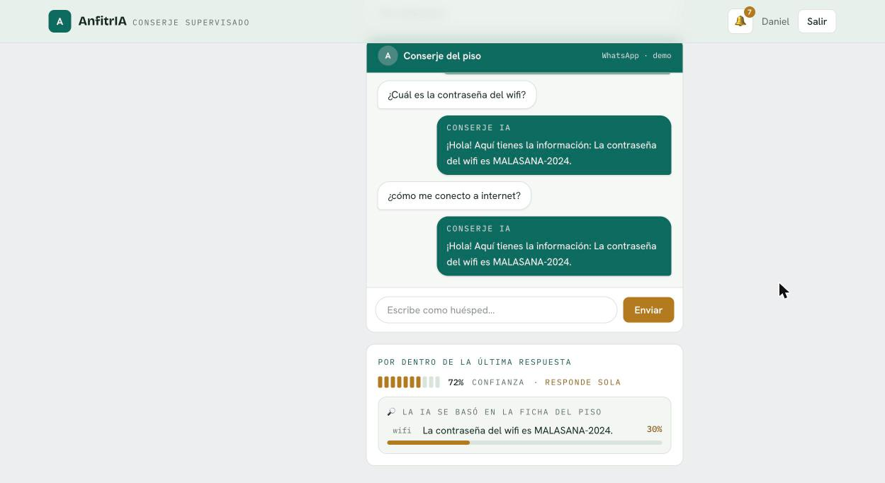
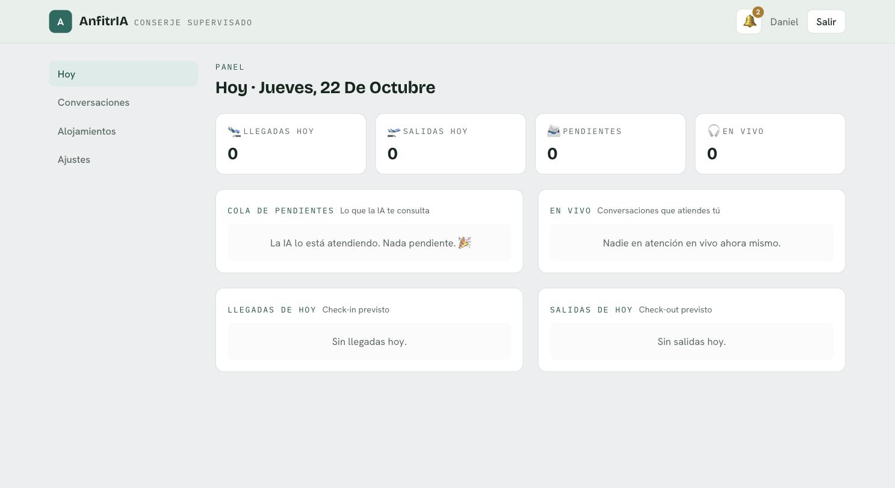

El problema
Las mismas preguntas, una y otra vez, a cualquier hora.
Check-in, wifi, cómo llegar, normas, parking. Hoy las contesta el anfitrión por teléfono o WhatsApp: consume su tiempo y deja al huésped esperando. Automatizarlo es fácil; automatizarlo sin que la IA se invente datos es lo difícil.
La solución
Un conserje que sabe lo que sabe —y lo que no.
Responde con la ficha
Cada respuesta se ancla en el conocimiento del piso (wifi, check-in, normas…) mediante recuperación semántica.
Supervisión real
Si la confianza es baja o falta información, escala: el huésped recibe un aviso y el anfitrión responde desde el panel.
Aprende sola
Al resolver una escalada, la respuesta se guarda en la ficha. La próxima vez que pregunten lo mismo, responde sola.
Multi-idioma
Detecta el idioma del huésped y responde en el suyo (ES · EN · FR · DE · IT), con el contexto de su reserva.
Cómo funciona
El recorrido de cada mensaje.
Un pipeline de RAG con supervisión y aprendizaje en el bucle.
La diferencia
RAG visible y medido.
Lo que distingue a AnfitrIA de "un CRUD con un chatbot": la recuperación no es una caja negra, y su calidad está medida con un harness de evaluación, no supuesta.
El umbral está sesgado a la seguridad: ante una señal débil, prefiere escalar antes que arriesgar una respuesta equivocada. Y cada respuesta guarda las citas que la anclaron —fragmento, categoría y % de similitud—, visibles en el simulador, la bandeja y la auditoría: se ve en qué se basó.
Diseño adaptable
Gratis para probar. Claude para ir en serio.
Cada pieza —IA, embeddings, canal— es un adaptador conmutable. La demo arranca sin claves ni coste; en producción se enchufa el modelo de pago y el canal real sin tocar la lógica de negocio.
| Pieza | Demo · sin clave | Producción |
|---|---|---|
| IA | mock determinista: repite el fragmento recuperado | Claude razona sobre la ficha: entiende la intención y escala con criterio lo que falta |
| Embeddings | bolsa de palabras (léxico) | semánticos: local (MiniLM) o API gestionada |
| Canal | simulador integrado | WhatsApp Cloud API |
Por eso la demo se ve honesta, pero algo literal: con Claude conectado, distingue "¿cuál es el nombre del wifi?" de la contraseña y pide lo que falta, en vez de soltar lo primero que encuentra.
Así se ve
El producto, por dentro.


Stack
Decisiones guiadas por el problema.
Camino a producción
Qué está resuelto y qué falta para ir en serio.
Honestidad por delante: es una base técnica sólida y una demo completa. El salto a un servicio con huéspedes reales tiene trabajo bien acotado —sobre todo operativo y legal.
Resuelto La base técnica
- ✓Arquitectura de producciónAsync, worker en cola, adaptadores conmutables, migraciones Alembic.
- ✓RAG visible + confianza graduadaCitas con similitud; la confianza combina modelo y recuperación.
- ✓Embeddings semánticos + evaluaciónHarness que mide la calidad; recuperación del 30% al 70%.
- ✓Seguridad baseCookies httpOnly, CSRF, firma HMAC del webhook, rate limiting.
- ✓TrazabilidadAuditoría de cada decisión de la IA y del anfitrión.
Pendiente Para huéspedes reales
- →Alta real de WhatsApp BusinessVerificación de empresa por Meta, plantillas aprobadas, ventana de 24 h y opt-in del huésped. Es el mayor trabajo operativo.
- →Escala de la recuperaciónOperador indexado de pgvector (ANN) para muchos pisos, o un proveedor de embeddings gestionado.
- →Evaluación continuaAmpliar el harness a un set real, calibrar la confianza y alertar de regresiones de calidad.
- →Gestión del conocimientoDetectar información caduca o contradictoria que la IA haya aprendido; revisión periódica.
- →Observabilidad y legalMonitorización y alertas de fallos, mensajes no-texto (foto/audio), y cumplimiento GDPR de los datos del huésped.